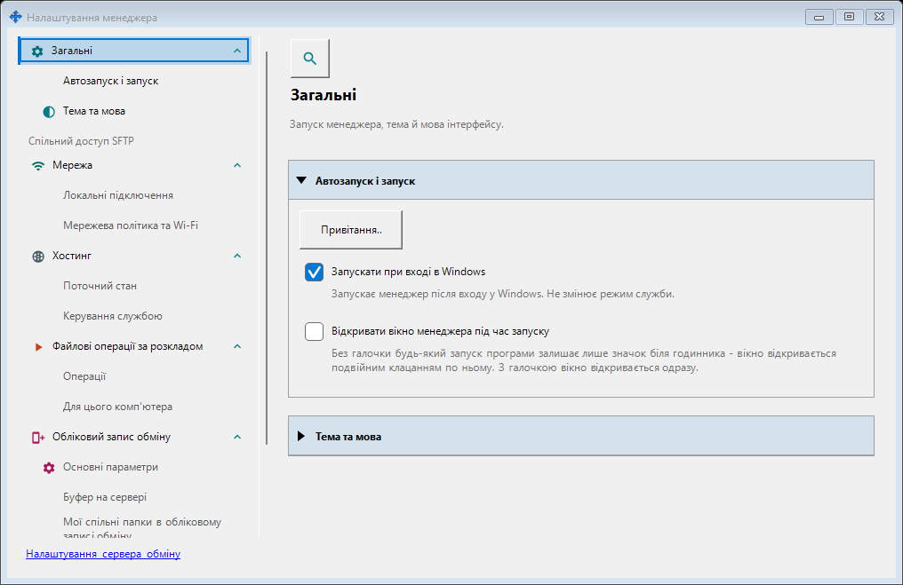
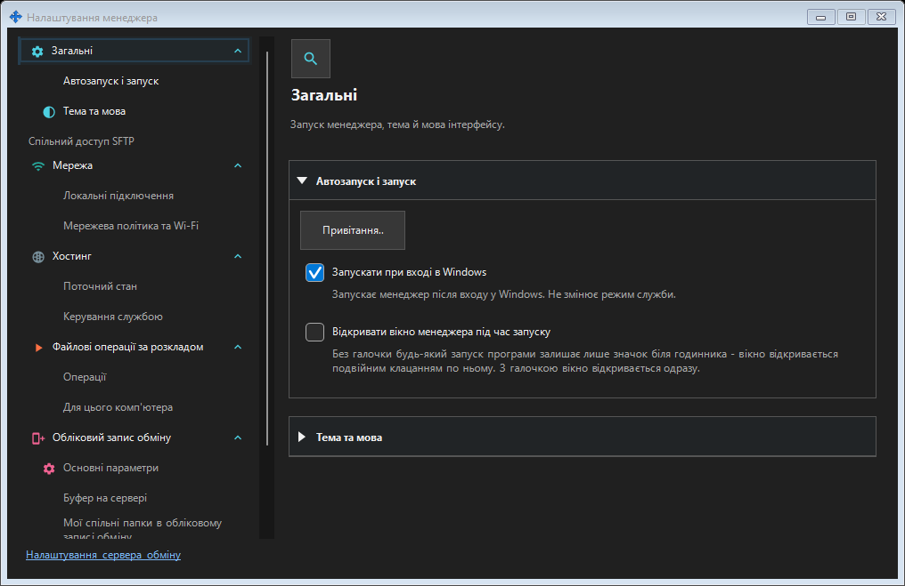
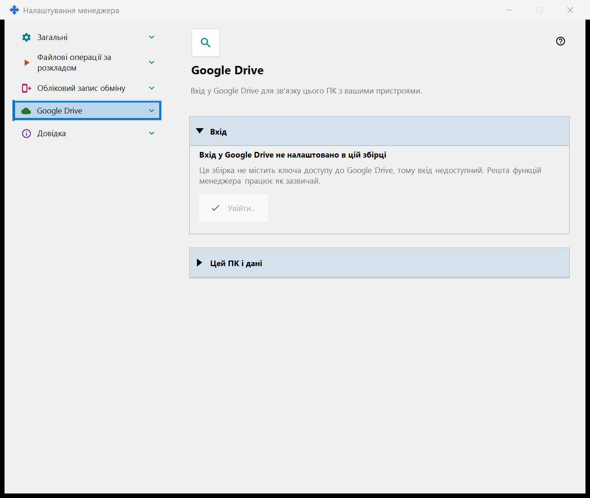
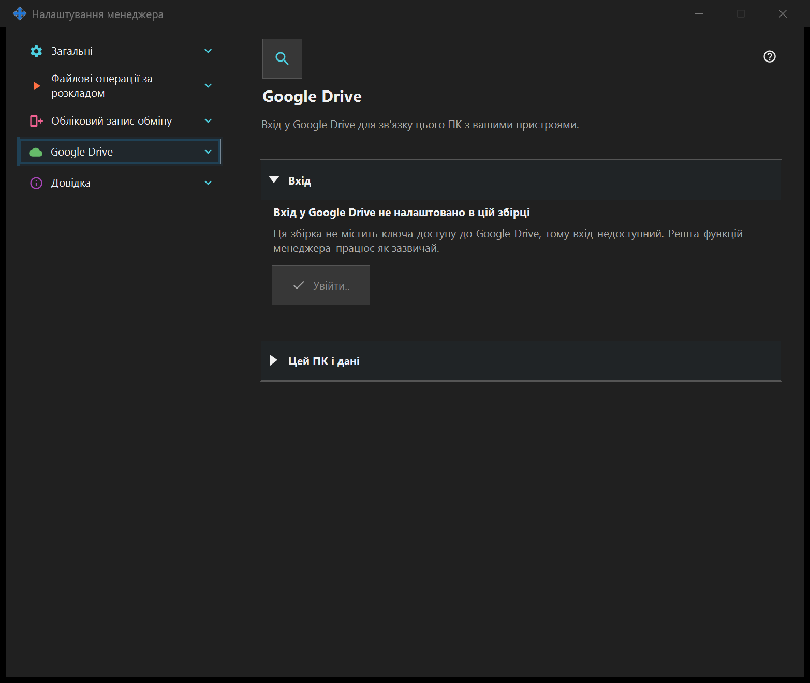

Налаштування менеджера
Налаштування менеджера
Призначення
Тут налаштовуються запуск менеджера, тема й мова. Підключення цього ПК до віддаленого сервера обміну, публікація ресурсів, буфер і операції за розкладом належать менеджеру та не потребують локального сервера обміну чи ввімкнення SFTP. Якщо встановлено компонент спільного доступу SFTP, його сторінки входять до цього вікна окремою групою.


Порядок дій
Відкрийте налаштування менеджера з його вікна або трея. Виберіть сторінку, розгорніть групу або скористайтеся пошуком. Посилання відкриває налаштування локального сервера обміну поруч. Закриття одного вікна зберігає інше вікно, розклади й сервери.
Елементи вікна
Налаштування менеджера
Тут налаштовуються запуск менеджера, тема й мова. Підключення цього ПК до віддаленого сервера обміну, публікація ресурсів, буфер і операції за розкладом належать менеджеру та не потребують локального сервера обміну чи ввімкнення SFTP. Якщо встановлено компонент спільного доступу SFTP, його сторінки входять до цього вікна окремою групою. Відкрийте налаштування менеджера з його вікна або трея. Виберіть сторінку, розгорніть групу або скористайтеся пошуком. Посилання відкриває налаштування локального сервера обміну поруч. Закриття одного вікна зберігає інше вікно, розклади й сервери.
Налаштування менеджера
Тут налаштовуються запуск менеджера, тема й мова. Підключення цього ПК до віддаленого сервера обміну, публікація ресурсів, буфер і операції за розкладом належать менеджеру та не потребують локального сервера обміну чи ввімкнення SFTP. Якщо встановлено компонент спільного доступу SFTP, його сторінки входять до цього вікна окремою групою. Відкрийте налаштування менеджера з його вікна або трея. Виберіть сторінку, розгорніть групу або скористайтеся пошуком. Посилання відкриває налаштування локального сервера обміну поруч. Закриття одного вікна зберігає інше вікно, розклади й сервери.
Google Drive
Тут цей ПК входить у ваш власний обліковий запис Google, щоб застосунок міг користуватися своєю прихованою папкою на вашому Google Drive. Натисніть «Увійти..»: відкриється браузер за замовчуванням, ви підтверджуєте доступ у Google, і Google повертає відповідь на цей ПК за локальною адресою; після цього вкладку браузера можна закрити. Запитується єдиний дозвіл - доступ до власної прихованої папки застосунку на вашому Google Drive (область drive.appdata): застосунок не бачить жодних інших файлів на вашому Google Drive і не отримує ні адреси електронної пошти, ні даних профілю. Якщо Google надає не той доступ, що запитувався, вхід відхиляється. Напівжирний рядок показує стан. «Вхід у Google Drive не виконано»: доступна кнопка «Увійти..»; якщо доступ відкликано або він закінчився, рядок нижче повідомляє про це й пропонує увійти знову. «Очікування входу в браузері..»: завершіть вхід у браузері або натисніть «Скасувати». «Вхід у Google Drive виконано»: цей ПК пов'язано з вашим Google Drive, показано його ім'я та короткий ідентифікатор. «Google Drive зараз недоступний»: рядок нижче називає причину - немає зв'язку, досягнуто добового ліміту завантаження, на вашому Google Drive немає вільного місця або Google повернув помилку; за відсутності зв'язку та за помилки застосунок повторює спробу сам. «Вихід із Google Drive..» показується, поки триває вихід. «Вийти на цьому пристрої» ставить одне запитання, відповідь за замовчуванням - «Ні». Після «Так» доступ відкликається в Google, записи цього ПК видаляються з прихованої папки на вашому Google Drive, а токен входу, збережений на цьому ПК, видаляється; рядок під кнопками повідомляє, скільки записів видалено, або що Google не підтвердив відкликання доступу - його тоді можна відкликати в налаштуваннях облікового запису Google. У збірці без ключа доступу Google сторінка показує «Вхід у Google Drive не налаштовано в цій збірці», кнопка «Увійти..» недоступна, решта функцій менеджера працює як зазвичай.


Налаштування менеджера
Тут налаштовуються запуск менеджера, тема й мова. Підключення цього ПК до віддаленого сервера обміну, публікація ресурсів, буфер і операції за розкладом належать менеджеру та не потребують локального сервера обміну чи ввімкнення SFTP. Якщо встановлено компонент спільного доступу SFTP, його сторінки входять до цього вікна окремою групою. Відкрийте налаштування менеджера з його вікна або трея. Виберіть сторінку, розгорніть групу або скористайтеся пошуком. Посилання відкриває налаштування локального сервера обміну поруч. Закриття одного вікна зберігає інше вікно, розклади й сервери.
Налаштування менеджера
Тут налаштовуються запуск менеджера, тема й мова. Підключення цього ПК до віддаленого сервера обміну, публікація ресурсів, буфер і операції за розкладом належать менеджеру та не потребують локального сервера обміну чи ввімкнення SFTP. Якщо встановлено компонент спільного доступу SFTP, його сторінки входять до цього вікна окремою групою. Відкрийте налаштування менеджера з його вікна або трея. Виберіть сторінку, розгорніть групу або скористайтеся пошуком. Посилання відкриває налаштування локального сервера обміну поруч. Закриття одного вікна зберігає інше вікно, розклади й сервери.
Налаштування менеджера · Налаштування спільного доступу SFTP · Налаштування сервера обміну